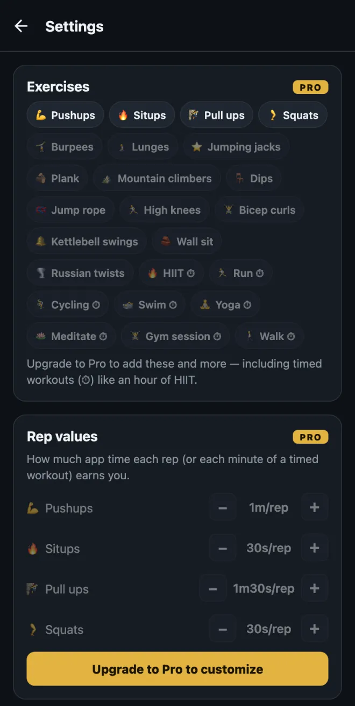
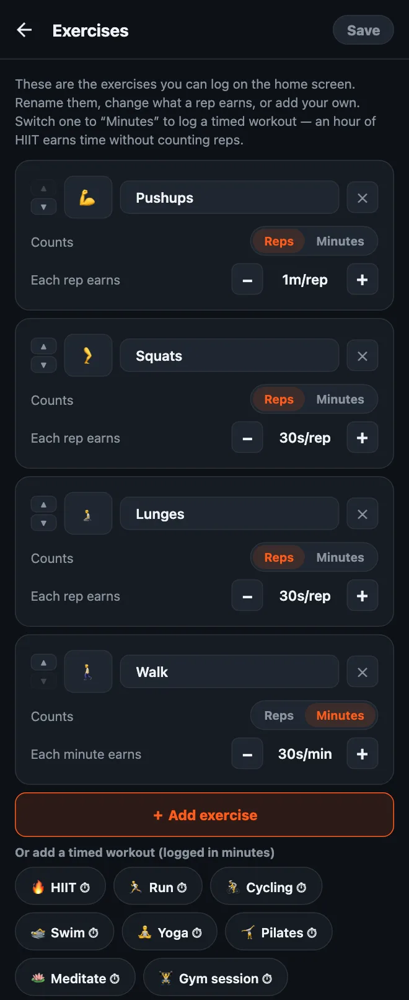

How to customize your exercises in HonorFit
Hey y'all! HonorFit started as a pushup app blocker for me: Instagram stays locked until I do some pushups, and I log them myself on the honor system (no camera). It ships with four exercises: pushups, situps, pull ups and squats.
But not everybody wants to do pushups. Maybe your wrists hate them, maybe you'd rather do burpees, or maybe you already ran 5 miles today and want that to count. Fair! So you can change all of it. Here's exactly how, and what's free vs. what needs Pro.
What's free and what's Pro
I'll be upfront: changing your exercises is a Pro feature. The free version is the four built-in exercises with these values:
| Exercise | Each rep earns (default) |
|---|---|
| 💪 Pushups | 1 minute |
| 🔥 Situps | 30 seconds |
| 🧗 Pull ups | 1 minute 30 seconds |
| 🦵 Squats | 30 seconds |
On free, each rep wheel goes up to 20 per set, and you can bank up to 20 minutes at a time. Blocking, logging and stats are free forever.
Pro is $3 a month or $19.99 once (that's the US price; the store shows yours in your currency). It lets you add, rename and remove exercises, change what each rep earns, log timed workouts in minutes, takes the wheels up to 100 per set, and removes the 20-minute cap. There's other stuff in Pro too, but this post is just about exercises.

1. Open the exercise editor
- On the home screen, tap the gear in the top right to open Settings.
- Tap the Exercises card at the top.
You'll see one card per exercise. Nothing you do here takes effect until you tap Save in the top right, so poke around all you want. If you back out without saving, nothing changes.

2. Rename an exercise or change its emoji
Tap the name and type whatever you want. “Pushups” can become “Knee pushups” or “Wall pushups” if that's what you actually do. To change the icon, tap the emoji square on the left and pick one from the grid (there are about 40 fitness-ish ones).
Small thing: the built-in names follow your app language, so “Squats” shows up in Spanish if your phone's in Spanish. Once you rename one, it shows exactly what you typed.
3. Set how much screen time each rep earns
Under each exercise there's Each rep earns with a − and + button. Each tap moves it by 5 seconds, and the lowest it goes is 5 seconds. So you can make burpees worth 1m30s and jumping jacks worth 10s, whatever feels fair to you.
You can also change just the values without opening the editor: Settings has a Rep values section right under the Exercises card with the same −/+ buttons.
4. Add an exercise
Two ways:
- Tap “＋ Add exercise”. You get a new card called “New exercise” worth 30 seconds a rep. Rename it and set the value.
- Tap a suggestion. Under the button there's a row of common ones you can add with one tap: Burpees, Lunges, Jumping jacks, Plank, Mountain climbers, Dips, Jump rope, High knees, Bicep curls, Kettlebell swings, Wall sit and Russian twists. They also start at 30 seconds a rep. Once you add one, it disappears from the suggestions.
Every exercise you have gets its own wheel on the home screen, so I'd keep it to around four. More than that and you're scrolling to find the one you want.
5. Log timed workouts (minutes instead of reps)
This is the one I get asked about most. Some exercise just doesn't come in reps: a walk, a yoga class, a run, an hour at the gym. Each card has a Counts: Reps | Minutes switch. Flip it to Minutes and that wheel counts minutes, and the value becomes Each minute earns.
There are one-tap timed suggestions too (they show a ⏱): HIIT, Run, Cycling, Swim, Yoga, Meditate, Gym session and Walk.
New timed workouts start at 30 seconds per minute, so an hour of HIIT earns 30 minutes of app time. Heads up: when you switch an exercise between Reps and Minutes, its value resets to 30 seconds, since “1 minute per rep” and “1 minute per minute” are pretty different deals. Just set it again after you switch.
The wheel counts whole minutes, so a 30-second plank doesn't really fit as Minutes. For holds like that, I'd leave it on Reps and decide what a rep means to you (say, one 20-second hold).
6. Remove one, or start over
- Tap the ✕ on a card to remove that exercise. You always have to keep at least one.
- Reset defaults at the bottom puts back the original four with their original values. Like everything else here, it only sticks once you tap Save.
How I'd pick the values
The value is the price of your apps, so the goal is a price you'll actually pay instead of lying about. Some starting points:
- Harder moves earn more. Pull ups and burpees at 1m30s, pushups at 1m, squats and lunges at 30s.
- Timed stuff at about half. 30 seconds per minute means a 20-minute walk buys you 10 minutes of scrolling. If walking is the habit you most want, bump it to 1 minute per minute.
- If you catch yourself fudging the number, lower the price. That's my rule on the honor system. Logging reps you didn't do means the price is wrong, not that you're bad at this.
- Hard mode (Pro) halves every value with one toggle in the header, if you want a tougher day without editing everything.
If you want ideas for specific setups, I wrote two more posts: kegels and glute bridges as your unlock exercises, and low-impact exercises for when pushups aren't your thing.
HonorFit Blocker is a free app blocker for iPhone and Android. Honor system, no camera, nothing leaves your phone. Custom exercises come with Pro. It's not for everyone, but maybe some of y'all will enjoy it!